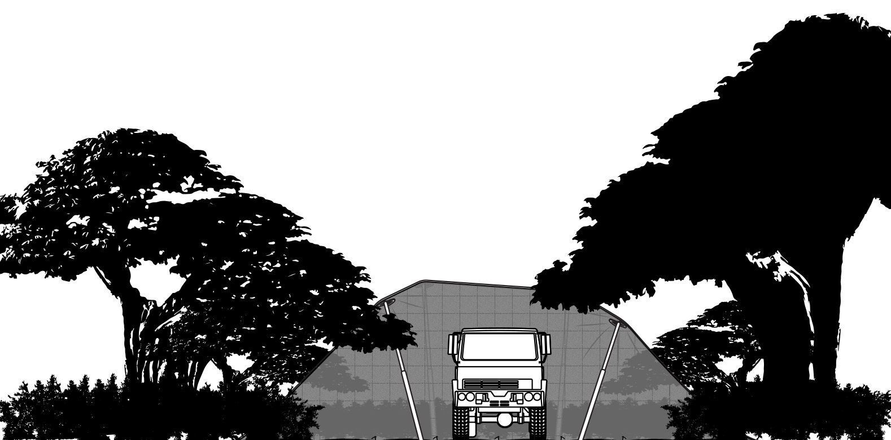

CRITICAL CONSIDERATIONS
INTRODUCTION
Fibrotex USA has decades of experience developing, training, and using a variety of signature management systems and techniques.
From this experience, multiple subject matter experts have distilled the most relevant information into this guide, which is intended as a supplement to the ULCANS Increment I Technical Manual.
The information contained in this section is based on frequently asked questions and commonly observed 'mistakes' in training and in the field.
LOCATION
It is best practice to minimize the area of the side facing the threat when positioning/orienting the asset and system.
It is beneficial to deploy the system behind at least the first tree line, with concealment improving with increased foliage between the asset and the threat.
To decrease detectability, avoid disturbing environment (foliage, snow, sand, etc.) around and especially in front of system. Tire tracks, footprints, and other evidence of activity can affect multispectral reflective properties of the environment around the system. 
When determining which pattern or side of system to deploy, consider the effect of shadows on the system. It is recommended to select the lighter side when in doubt, as shadows from surroundings will darken the pattern when deployed.
It is best to embed system into environment as much as possible. To avoid solar loading and ensure system reflects properties of the immediate environment rather than the sky, position system to be naturally shaded.
Naturally, part of the system will reflect the sky. It is important to minimize the area which is at an angle to reflect the sky towards the threat. Angle system so that vegetation is reflected as much as possible.
DEPLOYMENT
It is recommended to size up whenever calculating appropriate configuration for net assembly based on the size of the asset to be concealed. This allows for more mobility under nets without compromising their concealment capabilities.
POSITIONING THE POLES
- Place bottom of poles as close as possible to asset to be concealed, with shape disruptor end pointing away.
- Arrange poles to allow a wide enough space between for vehicle(s) to depart without needing to reposition poles.
- Place corner poles at 45-degree angles from each corner of asset to be concealed. Place additional poles at 90 degrees pointing away from asset. The GTA illustrates this configuration clearly.

POSITIONING THE ROLLED NET CONFIGURATION
- When placing rolled net configuration on top of asset to be concealed, take into account variations in height of the asset. If one side or area is taller than another, the folded/rolled net should be placed closer to highest point to ensure all sides are covered when net is unfolded/unrolled. If the asset is of even height, without a tall point, the folded/rolled net should be placed in the center.
DEPLOYING THE STAKES
- Create tension in net by aligning two personnel on opposite corners of the system, having them pull against each other and away from the asset at the same time. Each stake should have a counterpart on the opposite side of the system to ensure even distribution of tension from net(s).
- It is recommended to use at least eight stakes for the smallest configuration. Add more stakes for larger configurations.
- Driving stakes roughly half their length into ground when first deploying is useful and time saving when repositioning is required to adjust net and address slack. Make sure to drive stakes all the way into the ground once net is deployed properly.
- When slack in net cannot be eliminated by repositioning location of stakes, it is helpful to use the becket loops to create a small fold that reduces effect of slack. To do so, thread one long becket loop through adjacent short loop, then double back with long loop and attach to stake.
DEPLOYING THE NETS AND POLES
- Once stakes are deployed, begin extending support poles, starting at tallest point of asset (usually the center) and deploy first poles. Work your way to lowest point of asset on both sides to maintain some level of symmetry.
- Always extend upper section/clamp first.
- Always lock clamp once extended until a 'click' is heard.
- Take advantage of pole's foot spikes to maximize hold, reinforce net tension, and avoid system movement.
- It is recommended to angle poles so that smaller side of figure eight shape disruptor is pointed towards the corner of the system at each corner.
- Place poles in a way such that the base of each pole is as close to the asset as possible without interfering with vehicle movement or critical access points.
- If needed, position poles on top of a vehicle to create required clearance between the net and platform without interfering with vehicle movement or critical access points.
GENERAL
- Camouflage is compromised of two basic principles: shape disruption and 'noise.'
- Shape: There are no straight lines in nature (apart from urban environments, which are not natural). To better resemble the environment, it is important to create natural, non-geometric shapes or outlines with the systems. This component of camouflage is created by the end user.
- Noise: The goal is to mimic noise created by the environment within different bandwidths detected by sensors. Noise is created by the manufacturer.
- It is recommended to use an 'outside spotter' to guide system deployment and ensure the system merges with the environment and does not create unnatural shapes or angles that may contrast with the background.
- Deploy poles so that wide side of shape disruptor is on the seam to reinforce net interconnection and direct net tension such that it does not create gaps in the quick connection seams.

- If you anticipate needing to open net connections (e.g. to take out a barrel), begin quick connection process at edges of system working towards the center. This will allow them to disconnect from the center to create a small opening rather than needing to undo an entire side, compromising the system as a whole.
- It is possible to use the system cases to cover sharp edges of the platform like concertina fences to reduce risk of ripping nets.
- Inversion is the most dangerous time frame, both day-to-night and night-to-day, due to larger temperature differences between air, ground, foliage, rocks, and other environmental components. Inversion can take up to three hours, depending on global position and time of year.
-
When operating a vehicle under a net, heat will be generated that may compromise the system. It is important to note that thermal devices detect particles, not actual thermal energy. There are two strategies for mitigating this risk:
- Create an exhaust extension to force exhaust underneath/outside net.
- Create openings in the net roof to function as a chimney to allow particles to escape.